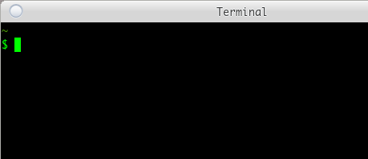

写给高年级小学生的《Bash 指南》
若让计算机理解我的意图，可以有两种方式，说和指。这与生活中我为了让他人能够理解我的意图所采用的方式相似。譬如，我想让朋友去超市帮我买瓶饮料，我可以使用祈使句，「帮我去超市买瓶可乐，如何？」我也可以把他领到超市门口，指一下超市，然后再把他领进超市，指一下饮料柜里的一瓶可乐，然后再指一下他口袋里的钱包。基于说的方式让计算机理解我的意图，就是向计算机输入一些命令，计算机则通过命令解释程序理解我的意图。基于指的方式让计算机理解我的意图，就是通过鼠标、触摸屏之类的交互设备，向计算机输入一些坐标信息，计算机则通过图形界面程序理解我的意图。
在生活中，人们通常会喜欢通过说的方式让他人理解自己的意图，只有在难以言说的时候，才会考虑用指的办法。这是因为我们已经掌握了一门与他人沟通交流所用的语言，利用这种语言让他人理解我们的意图，是成本最低的方法。但是对于计算机而言，由于大多数人通常没有机会学习计算机可以理解的语言，因此对于他们而言，采取指的方式让计算机理解他们的意图则是成本最低的方法。因为这个缘故，大多数人喜欢以图形界面交互的方式使用计算机，因为他们觉得学习一门计算机语言，成本太高。倘若将一门计算机语言列入小学课程，或许孩子们长大后与计算机的沟通便不再像现代人这样过度依赖图形界面交互方式。
图形界面与命令并不冲突。我们教孩子说话，一开始也是以指物的方式，让孩子获得了基本的语言交流能力，在这个基础上再教他们识文断字。图形界面程序为计算机的普及作出了很大贡献，但是在这个基础上，若想让计算机更准确、高效地理解我们的意图，同时也能让他人更准确、高效地理解我们的意图，便需要学习一门计算机语言了。
计算机语言不像人类语言那样丰富。因此，不要指望我们冲着计算机喊几嗓子，或者在运行着命令解释器的终端（命令行窗口）里输入「帮我写毕业论文」这样的句子，计算机就能够充分理解我们的意图，转而毫无怨言地去工作。至少直至目前，我们的计算机尚不具备这样的功能。不过，我们可以通过付费的方式，对那些擅长计算机语言的人喊几嗓子，或者给他们发几条微信。倘若想亲历亲为，而且认为与计算机这样的机器进行交流像是在玩一种文字意义上的游戏，那么便可以从学习一种命令解释程序入手，学习这个程序所支持的语言以及一些常用的命令。
Bash 语言
若打算学习计算机语言，不妨从 Bash 语言入手，把它作为「母语」。
Bash 是一个命令解释程序，用于执行从标准输入或文件中读取的命令。能被 Bash 理解的语言即 Bash 语言。像 Bash 这样的程序通常称为 Shell，作为计算机用户操作计算机时的基本交互界面，亦即计算机用户通过 Shell 使用操作系统内核所提供的种种功能。Bash 是众多 Shell 中的一种，但它却是流传最为广泛的 Shell。在 Windows 系统中，Windows 10 以前的版本可以通过安装 Cygwin 便可获得 Bash，而在 Windows 10 中，只需开启 WSL（Windows Subsystem for Linux）便有了 Bash。至于 Linux 和 Mac OS X 系统，Bash 则是它们的核心标配组件。Android 手机上，通过 F-Droid 安装 Termux 也能得到 Bash。
因为 Bash 几乎无处不在，而且它能够帮助我们处理许多计算机里的日常任务，所以不妨把它作为计算机世界里的母语去学习。计算机语言虽然种类繁多，但是用这些语言写的程序，通常可以作为命令在 Bash 或其他某种 Shell 环境中运行，这种做法颇类似于我们在母语的基础上学会了一些专业里的「行话」。
事实上，在熟悉了 Bash 语言以及一些常用的命令之后，经常可以发现，很多人用其他编程语言所写的那些程序实际上没必要写，因为这些程序很有可能只需要一条 Bash 命令便可以实现了。譬如，你在撰写文档的时候，有时可能会想使用直角引号「 和 」，而非 “ 和 ”，但是自己所用的中文输入法里可能并不是很方便输入 「 和 」，这时该怎么办呢？没有多少好办法，除非你对这个输入法足够了解，去修改它的码表，为键盘上的 " 键与 「 和 」 建立映射。对于 Bash 而言，如果你的文档能够表现为纯文本的格式，假设文件名为 foo.txt ，那么你大可以继续使用 “ 和 ”，只需在文档定稿后，使用 sed 命令将 “ 和 ” 替换为 「 和 」，即
$ sed -i 's/“/「/g; s/”/」/g' foo.txt
已经习惯了图形界面交互方式与计算机沟通又抗拒学习计算机语言的人可能会抬杠，「我在微软 Word 里也可以用『查找/替换』的方式来完成你这条命令所能完成的任务啊！」诚然如此，但是如果手上不止有一份文件，而是有一组文件 foo-1.txt、foo-2.txt、foo-3.txt……需要作引号替换处理呢？难道要用微软 Word 逐一打开这些文件，然后作「查找/替换」处理，再逐一保存么？倘若这样做，就相当于是计算机在使用人，而非人使用计算机。对于 sed 命令而言，将某项文本处理过程作用于多份文件与作用于一份文件并无太大区别。若对 foo-1.txt、foo-2.txt、foo-3.txt……进行引号替换，只需
$ sed -i 's/“/「/g; s/”/」/g' foo-*.txt
庄子说，「指穷于为薪。火传也，不知其尽也。」倘若将「引号替换」视为「火」，那么用微软 Word 逐一打开文件，进行引号替换处理，再将处理后的文件保存起来，这种做法就是「指穷于为薪」，即使你很敬业，很努力，但是这样去做一辈子，在 sed 看来也只是完成了它在一瞬间就能做到的事。庄子若活到现在，一定是一个善于用计算机语言编程的人。
终端
心里至少要有一团光，哪怕它很微弱，只是来自一根火柴。在这样的微光里，看到的是世界是一片寂静的混沌，至少也是全貌。我的桌子上总是有一盒火柴，作为对童年爱放野火的冬天的怀念。我取出一根火柴，让它的头部迅捷有力地擦过磷纸，小小的火焰喷射而出，引燃了它的身体。我要带着这团火焰，进入一个诡异的黑暗世界，它的名字叫终端。
终端是 Shell 的界面，人通过终端输入命令。Shell 从终端接到命令，然后理解命令，执行命令。不要忘记，Bash 是诸多 Shell 中的一种。
在这个世界里，持着光，我注意的第一个东西是「$」，它的右面是一个不断明灭的矩形块，顶部是「~」。「$」称作命令提示符。闪烁的矩形块表示可以在此输入命令。「~」是我当前所在的位置——硬盘里的某个目录，亦即当前目录或当前工作目录。实际上 ~ 不过是 Bash 对我的个人主目录给出的简写，它的全称是「/home/garfileo」。倘若我此时正处于/tmp 目录，那么$ 的顶部应当是「/tmp」。

对于终端的初始印象，你与我或许不同。若想看到我所看到的，需要在 ~/.bashrc 文件里添加
PS1="\e[0;32m\w\e[0m\n$ "
\e[0;32m 和 \e[0m 皆为 Bash 世界里的颜色值，前者表示绿色，后者表示无色；当二者之间出现 \w 时，所产生的效果是设定 \w 为绿色，但是不影响 \w 以外的字符。\w 表示当前目录。\n 表示换行。这种咒语级的代码，足以令很多人望 Bash 而生畏或生厌了。不必担心，这样的咒语并不经常需要念。
倘若我在 ~/.bashrc 文件里删除上述对 PS1 的设定，那么我对终端的初始印象应当是 $ 的顶部没有东西，左侧是「garfileo@zero ~」，右侧是那个不断明灭的矩形块。或许你会喜欢我对 PS1 所作出的上述设定，特别是在你企图在命令提示符的右侧输入很长的命令之时。
echo
初次使用 Bash，也许尚不知如何向 ~/.bashrc 文件添加
PS1="\e[0;32m\w\e[0m\n$ "
不过，现在运行 Bash 的操作系统大多提供了图形界面。可以图形界面式的文件管理器里找到 .bashrc 文件，然后使用一种图形界面式的文本编辑器打开这份文件，添加上述内容，然后再保存文件。这是我们刚开始使用计算机的时候就已经学会了的方法。但是，从现在开始可不必如此，因为类似的任务通过一些简单的命令便可完成。例如，要完成上述任务，只需在终端的命令提示符后输入
echo 'PS1="\e[0;32m\w\e[0m\n$ "' >> ~/.bashrc
然后回车。之后，Bash 便会对我们输入的这一行文本予以理解和执行。我们输入的这行文本便是命令。
echo 命令可将一行文本显示于终端。例如，
$ echo 'PS1="\e[0;32m\w\e[0m\n$ "'
Bash 执行这条命令之后，终端紧接着便会显示
PS1="\e[0;32m\w\e[0m\n$ "
就像是对空旷寂静的山谷喊了一声「PS1="\e[0;32m\w\e[0m\n$ "」，然后山谷给出了回音，echo 命令得名于此。亦即，echo 只是将它所接受的文本不加改变地输出。
echo 本身是无用的。但是，当它的后面出现了 >> ~/.bashrc 时，它的输出便会被 >> 强行导入 ~/.bashrc 文件，此时没用的 echo 便发挥了作用。天生我材必有用。
>> 是输出重定向符，因为它可以将一个命令的输出导向到指定的文件。当 >> 在 echo 命令之后出现时，它是如何得知 echo 命令的输出的呢？对我们而言，echo 命令的输出是在终端里呈现出来的，难道 >> 也能像我们这样「看到」终端里的内容么？
我们看到的，并非全部。我们所看到的 echo 的输出，实际上是 echo 在一份文件里写入的内容，这份文件的名字叫 stdout（标准输出）。终端从 stdout 读取内容并显示于屏幕。>> 也能从 stdout 读取内容并写入其他文件。这些是我们看不到的部分。
输入/输出重定向
在终端的命令提示符后输入
echo 'PS1="\e[0;32m\w\e[0m\n$ "' >> ~/.bashrc
然后回车。Bash 是如何得到这行文本并将其作为命令予以执行的呢？依然是通过一份文件。这份文件的名字叫 stdin（标准输入）。我们在终端里输入任何信息，本质上都是在向 stdin 写入内容。当我们输入一行文本回车时，Bash 便开始读取 stdin 里的内容，把它们理解为一条命令或一组命令的组合，然后予以执行。
对于 >> 指向的文件（命令中位于 >> 右侧的文件），>> 是不改变其原有内容的前提下将 stdout 中的内容写入该文件，亦即向该文件尾部追加信息。若期望用 stdout 中的内容替换该文件的原有内容，可使用 >。例如（仅仅是个例子，不要真的去这样做）：
$ echo 'PS1="\e[0;32m\w\e[0m\n$ "' > ~/.bashrc
执行这条命令之后，~/.bashrc 文件的全部内容便会被替换为「\e[0;32m\w\e[0m\n$ "」。
任何命令，只要它能够向 stdout 输出信息，其输出皆能通过 > 和 >> 写入到指定文件。倘若所指定的文件不存在，Bash 会自动创建。因此，不妨将 Bash 的输出重定向符视为对各种文本编辑器或字处理软件的「文件（File）」菜单里的「另存为（Save as）」功能的抽象。
Bash 也提供了输入重定向符 <，可将其视为对各种文本编辑器或字处理软件的「文件（File）」菜单里的「打开（Open）」功能的抽象。任何命令，只要它以 stdin 中的信息作为输入，皆能通过 < 将指定文件中的信息作为输入，因为 < 可将指定文件中的信息写入 stdin。例如，Bash 将 stdin 中的信息视为命令予以执行，倘若将某条命令写入一份文件，然后通过 < 将该文件作为 Bash 的输入，所产生的效果是，Bash 会将这份文件中的内容视为命令并予以执行。以下命令模拟了这一过程：
$ echo 'echo "Hello world!"' > /tmp/foo.sh $ bash < /tmp/foo.sh Hello wrold!
在 Bash 中，可以执行 bash 命令，这一点细想起来会有些奇怪。不过，人类不是也经常将「自我」作为一种事物去思考么？
实际上，上述 bash 命令中的输入重定向符是不必要的。因为 bash 命令原本便支持直接读取指定文件中的内容并将其视为命令予以执行，即
$ bash /tmp/foo.sh
输入重定向符主要面向那些只支持从 stdin 获取输入信息的程序，例如，用于计算凸包的程序 qhull 便是这样的程序。倘若机器上已经安装了 qhull 软件包，可以使用 rbox 命令生成含有三维点集的数据文件，然后通过 < 将数据文件中的三维点集信息传递于 qhull 程序：
$ rbox c > points.asc $ qhull s n < points.asc
之后，qhull 便会输出三维点集的凸包信息。
管道
认真观察
$ echo 'echo "Hello world!"' > /tmp/foo.sh $ bash < /tmp/foo.sh
和
$ rbox c > points.asc $ qhull s n < points.asc
这两组命令是否相似？在形式上，它们都是一条命令通过输出重定向将自己原本要写入 stdout 的输出信息被重定向到了一份文件，另一条命令则是通过输入重定向将自己原本要从 stdin 里获取的输入信息变成了从指定文件中获取。这个过程类似于，你将信息写到了纸条上，然后又将纸条扔给我看。但是在生活中，我们通常不会这样麻烦，你会用嘴巴发出信息，我则用耳朵接受信息。Bash 也有类似的机制，名曰管道。基于管道，上述两组命令可简化为
$ echo 'echo "Hello world!"' | bash $ rbox c | qhull s n
只要一条命令能通过 stdout 输出信息，而另一条命令能通过 stdin 获取信息，那么这两条命令便可以借助管道连接起来使用。说话要比写字快，而且能够节省纸张，管道的意义与之类似，不仅提高了信息的传递速度，而且不消耗硬盘。
cat， mv 和 sed
通过 >> 能够实现向一份文本文件尾部追加信息。有没有办法向一份文本文件的首部追加信息呢？这个问题并不简单。在生活中，有许多事需要我们排队。来得晚了，应当主动站在队尾，这样做不会影响对于早来的人。但是，若来得晚了，反而强行站到队伍的前面去了，可能会被挨打。也许我们都喜欢插队，但是却很少有人喜欢插队的人。所谓文件，事实上不过是一组排好了队的字节。因此，通过 >> 向一份文本文件尾部追加信息容易，但是若将信息插入到文件的首部，原有的文件内容在硬盘里的相应位置必然要发生变化。
假设文件 foo.tex 的内容为
\starttext 这是一份 ConTeXt 文稿。 \stoptext
若想将「\usemodule[zhfonts]」增加到这份文件的首部，可通过以下命令实现：
$ echo '\usemodule[zhfonts]' > foo-tmp.tex $ cat foo.tex >> foo-tmp.tex $ mv foo-tmp.tex foo.tex
cat 命令用于将多份文本文件的内容连接起来，并将结果写入 stdout。当 cat 只处理一份文本文件时，产生的效果是将这份文件的内容写入 stdout。由于 stdout 中的内容可通过 >> 导入到指定文件，因此上述的 cat 命令所起到的作用相当于把 foo.tex 的内容复制出来，并追加到 foo-tmp.tex 的尾部。
mv 命令可将文件从其当前所在目录移动到另一个指定目录，倘若这个指定目录依然是当前目录，那么 mv 命令便起到了文件重命名的效果。上述 mv 命令将 foo-tmp.tex 重命名为 foo.tex。最终得到的 foo.tex，便等价于在其原有的内容首部插入了「\usemodule[zhfonts]」。
不过，能够运行 Bash 的环境，大多也提供了擅长处理文本编辑任务的 sed 程序。与 Bash 相似，sed 也能执行它能够理解的一组命令，这组命令专事于文本的编辑。例如，如果将
'1 i \ \\usemodule[zhfonts]'
传递于 sed，并指使 sed 将此命令作用于 foo.tex，即
$ sed -i '1 i \ > \\usemodule[zhfonts]' foo.tex
sed 便会这条命令理解为，在 foo.tex 的第 1 行插入「\\usemodule[zhfonts]」。
注意，上述的 > 符号并非输出重定向符，它是终端的二级命令提示符。在终端中输入多行文本构成的命令时，终端自动给出二级命令提示符。还记得 $ 吧，之前将其称为命令提示符，实际上它是一级命令提示符，这也正是为何用于设定它的格式时是通过 PS1 的原因。类似地，可以通过 PS2 来定制二级命令提示符的格式。Bash 如何知道我们要输入多行文本呢，亦即在我们输完 sed -i 'i 1 \ 并摁了回车键之后，为何 Bash 不认为我们已经将命令输入完毕呢？这是因为在上述命令中，在第一行的末尾出现的 \，会被 Bash 理解为续行符。回车键产生的换行符位于续航符之后，会被 Bash 忽略。
利用续行符，可将较长的命令分成多行输入，Bash 会将最后一行的换行符作为命令输入完毕的信号。例如，
$ echo 'echo "Hello world!"' \ > | bash
这条命令虽然不长，但是足以说明续行符的用法。
不过，上述的 sed 命令的第一行虽然在末尾出现了续行符，但实际上 Bash 是没有机会得知该续行符的存在。因为 sed 程序所接受的命令文本是拘禁在一对单引号中的，这种形式的文本叫做单引号字串。单引号字串中的续行符和换行符，Bash 会不予理睬。因此，上述的 sed 命令的第一行末尾的 \，实际上并非面向 Bash 而存在，「i \」实际上是 sed 程序的一个指令，用于在指定的文本行之前插入一行或多行给定的文本。因为 \ 对于 sed 程序有着特殊含义，因此在通过 sed 命令在 foo.tex 的首部添加「\usemodule[zhfonts]」时，必需对文本中的 \ 进行转义，由于 sed 程序是以 \ 为转义符，因此在 sed 命令中，「\usemodule[zhfonts]」必须写成「\\usemodule[zhfonts]」。
至此，是否觉察到了 Bash 语言的混乱之处？
引号
命令的输入数据和输出数据只有两种，文本与存储文本的文件。Bash 如何对它们予以区分呢？Bash 规定，凡出现在一对双引号 " 或出现在一对单引号 ' 之内的文字便是文本，否则便是文件。不过，我们向 Bash 提交的一切皆为文本。为了进行区分，应当将作为命令的输入或输出数据的文本称为字串，并且出现在一对 " 之内的字串可称为双引号字串，出现在 ' 之内的字串则称为单引号字串。
问为什么会有两种字串，不如问为什么人类发明的文字里要有两种引号。在与他人的对话中，彼此所说的每句话可以用双引号包围起来。例如：
我：“最近我在读《齐物论》。” 你：“它讲了什么？” 我：“庄子建议我们应当‘为是不用而寓诸庸’。”
单引号可以出现在双引号里，这意味着什么？意味着双引号更为宽松，而单引号则比双引号更为紧致。宽松的可以包含紧致的。对于 Bash 而言，双引号字串的宽松体现为，双引号字串中如果含有一些对于 Bash 有特殊含义的字符，Bash 会使用这些字符的含义代替这些字符。例如，
$ echo "$PS1"
倘若期望这条 echo 命令能够输出 $PS1，那么结果就会令人失望了。这条命令输出的并非 $PS1，而是一开始我们在 ~/.bashrc 文件中为 PS1 所设定的「\e[0;32m\w\e[0m\n$」。
单引号比双引号更为紧致，它可以阻止 Bash 对 $PS1 有其自己的理解。因此
$ echo '$PS1'
的输出结果方为「$PS1」。
前文中的示例
$ echo 'echo "Hello world!"' | bash
其中，双引号字串是放在单引号字串之内的，这与上述我虚拟的关于《齐物论》的对话中所用的引号的用法有所不同，但是在 Bash 语言中，只能这样去写。倘若将上述命令写成
$ echo "echo 'Hello world!'" | bash
Bash 对字串中出现的 ! 会有特殊的理解，因为 ! 是 Bash 命令，想不到吧？
字串中若出现引号，需要使用 \ 对引号进行转义。例如，
$ echo "I say: \"Hello world!\""
Bash 会认为 echo 的输入数据是「I say: "$hello"」。倘若去掉转移符 \，即
$ echo "I say: "$hello""
Bash 会认为 echo 的输入数据为
I say:$hello- 空字串
在双引号字串中，为避免 Bash 对某些我们期望保持本义的字符产生误解，通常需要用转义符 \ 让 Bash 放弃这样的尝试。
变量
PS1 是一个名字，「\e[0;32m\w\e[0m\n$」是它指代的对象，$PS1 是引用这个对象。Bash 允许我们以这样的方式对数据予以命名，而后以名字指代数据。例如
$ hello="Hello world!" $ echo $hello
与
$ echo "Hello world!"
等价。
名字，这是我们很熟悉的概念，但是在数学和编程中，它不再叫名字，而是叫「变量」。为数据取一个名字，就是「定义一个变量」，而使用这个名字，叫做「变量的展开」或者「变量解引用」。很寻常的做法，一旦换了名目，就立刻令人觉得莫测高深了起来。
名字之所以被视为变量，肯定不是因为老子说过「名可名，非恒名」。变量的存在，首先是为了便于数据的重复使用。譬如，一旦定义了变量 hello，便可以在命令中重复地使用它。
其次，变量便于实现数据的复合，例如
$ echo "I say: \"$hello\"" I say: "Hello world!"
这条命令利用了双引号字串的宽松特性，实现了在字串中对变量进行解引用，从而起到了言语简约但意义完备的效果。
但是，变量最重要的用途应该是执一发而动全身。如果有许多条命令使用了 hello 这个变量，当我对它指代的数据进行更换时，所有使用 hello 变量的命令皆会受到影响。
注意，在定义变量时，等号两侧不能出现空白字符。例如
$ my_var = "3"
Bash 不会认为这条语句是在定义变量 my_var，反而会认为 my_var 是一条命令，而 = 和 "3" 是这条命令的输入数据。
条件
对于一个变量 foo，若不知它是否已定义，可在终端里唤它一下试试，
$ echo $foo
倘若 echo 只是输出一个空行，便可以确定 foo 未定义。上述命令中，echo 输出了空行，因此 foo 未定义。
如果 foo 未定义，就给它一个定义，否则便对 foo 进行展开。像这样的任务，单凭查看 echo 的输出无法完成。不过，Bash 支持与「若……则……否则……」类似的语法。例如
$ if [ "$foo" = "" ]; then foo="FOO"; else echo $foo; fi
或
$ if [ "$foo" = "" ] > then > foo="FOO" > else > echo $foo > fi
[ "$foo" = "" ] 是一条命令，用于测试 "$foo" 与 "" 是否相同。if 可根据 [ "$foo" = "" ] 的结果控制 Bash 是执行 foo="FOO" 还是执行 echo $foo。
假设变量 foo 未定义，那么 [ "$foo" = "" ] 的结果是什么呢？为 0。假设变量 foo 已定义，那么 [ "$foo" = "" ] 的结果是什么呢？为非 0。如何得知 [ "$foo" = "" ] 的结果呢？显然这个结果不可能写在 stdout 里，否则我们可以从终端里看到这个结果，但事实上我们并不知道这个结果，而 if 却能知道。
事实上，每条命令在被 Bash 执行后，都会给出一个称作「命令的退出状态」的结果。Bash 内定的变量 ? 便指代这个结果。因此，要查看一条命令的退出状态，只需在它结束后，立刻对 ? 进行展开。例如
$ [ "$foo" = "" ] $ echo $? 0
[ "$foo" = "" ] 的退出状态为 0，意味着 "$foo" 与 "" 相同。倘若定义了 foo，
$ foo="FOO" $ [ "$foo" = "" ] $ echo $? 1
那么 [ "$foo" = "" ] 的退出状态为非 0，意味着 "$foo" 与 "" 不同。
常用的测试命令
由于 [ "$foo" = "" ] 是一条命令，因此必须注意，[ 与其后的字符之间至少要空出一格，否则这条命令便写错了，Bash 会拒绝执行。[ 和 ] 所囊括的文本称为表达式。
在测试命令的表达式中， = 可用于比较两个字串是否相同，比较结果表现为测试命令的退出状态。类似地，!= 可用于比较两个字串是否不同。= 和 ！= 皆为双目运算符，即参与运算的对象是两个。对于字串，也有单目运算符，例如 -z，用于确定字串长度是否为 0。事实上，[ "$foo" = "" ] 与 [ -z "$foo" ] 等价。
命令的输入/输出数据除了字串之外，还有文件。很多时候，也需要对文件进行一些测试。最为常用的是确定一份文件是否存在，单目运算符 -e 可满足这一要求。例如，
$ if [ -e foo.txt ]; then rm foo.txt; else touch foo.txt; fi
的含义是，若当前目录中存在文件 foo.txt，便将其删除，否则便创建一份空文件作为 foo.txt。rm 命令可用于删除文件或目录，touch 命令可用于创建给定文件名的空文件。类似命令有，-d 可用于确定文件或目录是否存在。-s 可用于确定文件存在并且内容为空。双目运算符 -nt 和 -ot 分别用于判断一个文件是否比另一个文件更新或更旧。
Bash 提供了许多测试运算，详情可查阅 test 命令的手册，方法是：
$ man 1 test
之所以要查阅 test 命令的手册，是因为 [ 表达式 ] 只是 test 命令的一种简洁的写法。事实上，
$ [ -e foo.txt ]
与
$ test -e foo.txt
等价。
在得知了 man 命令的存在之后，也许你会想查阅 rm，touch 等命令的手册。
循环
做 10 个俯卧撑。如何用 Bash 语言描述呢？有两种方式，一种是
$ for ((i = 1; i <= 10; i++)); do echo "第 $i 个俯卧撑"; done
也可以写为
$ for ((i = 1; i <= 10; i++)) > do > echo "第 $i 个俯卧撑" > done
或
$ for ((i = 1; i <= 10; i++)); do > echo "第 $i 个俯卧撑" > done
执行这条命令后，继而终端便会显示
第 1 个俯卧撑 第 2 个俯卧撑 第 3 个俯卧撑 第 4 个俯卧撑 第 5 个俯卧撑 第 6 个俯卧撑 第 7 个俯卧撑 第 8 个俯卧撑 第 9 个俯卧撑 第 10 个俯卧撑
另一种方式是
$ i=1 $ while ((i <= 10)); do echo "第 $i 个俯卧撑"; ((i++)); done
也可写为
$ i=1 $ while ((i <= 10)) > do > echo "第 $i 个俯卧撑" > ((i++)) > done
或
$ i=1 $ while ((i <= 10)); do > echo "第 $i 个俯卧撑" > ((i++)) > done
算术表达式
在 for 和 while 之后出现的 ((...)) 称为算术表达式。算数表达式可独立存在，也可以与 if、for 和 while 配合使用。
((a = 1)) 与 a=1 等价；算术表达式中的 = 两侧允许出现空格。
算数表达式中的比较运算可用于 if 语句。例如
$ if ((3 > 1)); then echo "Yes"; else echo "No"; fi Yes $ if ((3 < 1)); then echo "Yes"; else echo "No"; fi No
注意，for 循环结构中的算术表达式是由三个算数表达式构成，即
((表达式 1; 表达式 2; 表达式 3;))
这种算术表达式只能在 for 循环结构中使用。表达式 1 在循环开始时被求值。表达式 2 是在每一轮循环之前被求值，求值结果可以控制循环停止的时机：若求值结果为 0，则循环停止，否则开始新一轮循环。表达式 3 是在每一轮循环结束后被求值。上一节的 while 循环便是对 for 循环表达式很好的解释。
可以像变量展开那样获得算术表达式的求值结果。例如
$ echo $((3 > 1)) 1 $ echo $((3 < 1)) 0
务必弄清楚上述算术表达式的求值结果与命令退出状态的区别。
在 test 或 [ 命令中，数字之间的相等以及大小比较，可以用 -eq、-lt、-gt、-le、-ge，分别表示相等、小于、大于、不大于以及不小于。因此，在使用 test 命令时，要清楚是数字的比较还是字串的比较。
函数
与变量是数据的名字相似，函数是过程的名字。所谓过程，即按照时间顺序给出一组命令，让 Bash 依序执行每条命令。
md5sum 命令可以算出给定文件的 MD5 码。例如，
$ md5sum foo.jpg 95e25f85ee3b71cd17c921d88f2326bf foo.jpg
文件的 MD5 码，类似于我们的指纹。不同的人，指纹相同的概率很小。不同的文件，MD5 码相同的概率也很小。许多网站在收到用户上传的图片之后，会以图片文件的 MD5 码作为图片文件的名字，以此避免同样的图片存入数据库中，从而达成节省硬盘空间的目的。我们可以构造一个过程，将一份文件以它的 MD5 码重新命名，亦即我们要写一个函数。
先来考虑，这个过程应当分为哪些步骤。首先可以使用 md5sum 算出文件的 MD5 码。但是观察上述 md5sum 的输出，需要设法将 MD5 码之后的空格以及文件名去除，但是要保留文件名的后缀（例如 .jpg），继而将剩余的 MD5 码以及文件名的后缀组合为文件名，用这个名字对文件进行重新命名。
若实现上述过程，现有的 Bash 知识尚且不够。譬如，md5sum 命令输出的信息，如何将其作为数据，为其命名，从而得到一个变量？Bash 允许在变量的定义中临时启用自身的一个复本即子 Shell 去执行一些命令，而后将命令的输出到 stdout 的信息作为数据出现在变量的定义中。例如，
$ md5_info="$(md5sum foo.jpg)" $ echo $md5_info 95e25f85ee3b71cd17c921d88f2326bf foo.jpg
(...) 便是子 Shell，括号之内的文本便是要交由 Bash 的子 Shell 执行的命令。若让子 Shell 所执行命令的输出作为数据，需要使用 $ 对子 Shell 予以展开。
持有变量 md5_info 之后，可以使用 AWK 实现 MD5 码和文件名的后缀的组合。AWK 值得投入一些时间去学习它的基本用法，尤其是尚不知有什么好方法基于
95e25f85ee3b71cd17c921d88f2326bf foo.jpg
生成
95e25f85ee3b71cd17c921d88f2326bf.jpg
的此刻。
以下命令可从 $md5_info 中提取 MD5 码和文件名称后缀：
$ echo $md5_info | awk '{print $1}' 95e25f85ee3b71cd17c921d88f2326bf $ echo $md5_info | awk 'BEGIN{FS="."} {print $NF}' jpg
利用 Bash 的子 Shell，便可以将上述两条命令合并到一个新的变量的定义中，即
$ new_name="$(echo $md5_info | awk '{print $1}').$(echo $md5_info | awk 'BEGIN{FS="."} {print $NF}')" $ echo $new_name 95e25f85ee3b71cd17c921d88f2326bf.jpg
上述 new_name 的定义很长，不便理解，可以像下面这样多用两个变量对较长的变量定义以予以拆分：
$ md5_code="$(echo $md5_info | awk '{print $1}')" $ suffix_name="$(echo $md5_info | awk 'BEGIN{FS="."} {print $NF}')" $ new_name="$md5_code.$suffix_name" $ echo $new_name 95e25f85ee3b71cd17c921d88f2326bf.jpg
有了 new_name 变量，接下来只需使用 mv 对 foo.jpg 重新命名：
$ mv foo.jpg $new_name
大功告成……可以将上述命令所形成的过程以函数对其命名了，即
$ function rename_by_md5 { > md5_info="$(md5sum foo.jpg)" > md5_code="$(echo $md5_info | awk '{print $1}')" > suffix_name="$(echo $md5_info | awk 'BEGIN{FS="."} {print $NF}')" > new_name="$md5_code.$suffix_name" > mv foo.jpg $new_name > }
注：倘若你想亲手在终端里输入上述代码，不要忘记，
$是一级命令提示符，>是二级命令提示符，它们不必输入。
rename_by_md5 便是 { 和 } 所包围的这组命令的名字。在终端里，可以像命令那样使用这个名字，
$ rename_by_md5
结果便会将当前目录的 foo.jpg 重新命名为 95e25f85ee3b71cd17c921d88f2326bf.jpg。如果接下来再次使用这个名字，Bash 便会抱怨，没有 foo.jpg 这个文件：
$ rename_by_md5 md5sum: foo.jpg: No such file or directory mv: cannot stat 'foo.jpg': No such file or directory
这是因为 rename_by_md5 所指代的过程只能对 foo.jpg 文件重新命名。若已经对 foo.jpg 完成了重新命名，那么 foo.jpg 就不存在了，所以再次使用 rename_by_md5，便失效了。这样不好。函数应当能够变量那样，一经定义，便可重复使用。函数的重复使用，对于 rename_by_md5 意味着什么呢？意味着它所指代的过程不应当仅依赖 foo.jpg，而应当将这个过程所处理的文件名视为一个未知数。学过中学数学的我们应当很容易理解，函数的自变量就是未知数。上面定义的 rename_by_md5 里没有自变量，因此它虽然是函数，但实际上是一个常函数。
在 Bash 语言里，函数的自变量不像我们在数学里所熟悉的 x、y、z 这些 ，而是 1、2、3……它们皆为变量，若获得它们指代的数据，需要用 $。掌握了这一知识，可对上述的 rename_by_md5 予以修改
$ function rename_by_md5 { > md5_info="$(md5sum $1)" > md5_code="$(echo $md5_info | awk '{print $1}')" > suffix_name="$(echo $md5_info | awk 'BEGIN{FS="."} {print $NF}')" > new_name="$md5_code.$suffix_name" > mv $1 $new_name > }
亦即，将 rename_by_md5 原定义中出现那的 foo.jpg 全部更换为 $1，值得注意的是，这个 $1 与 awk 命令中的 $1 并不相同，而且 awk 命令也不会理睬前者。
现在的 rename_by_md5 可以用于任何文件的重新命名，例如：
$ rename_by_md5 foo.jpg $ rename_by_md5 bar.jpg
rename_by_md5 的定义中的 $1 所指代的值便是在上述命令中的输入数据。这样的输入数据称为函数的参数。会写支持一个参数的函数，想必写支持两个、三个或更多个参数的函数，并不难吧？不难。
脚本
上一节所讨论的函数 rename_by_md5，是在一个终端里定义的。若终端关闭，再开启，这个函数的定义便不复存在。为了让它恒久地存在，可将其添加到 ~/.bashrc 文件里，然后
$ source ~/.bashrc
或者在下次启动终端之后，Bash 便知道 rename_by_md5 是已定义的函数。不过，另有更好的方法可令 rename_by_md5 恒久存在。
为何放在 ~/.bashrc 中，Bash 便能得到函数的定义？不止如此，在上文中，我们也是在这份文件中定义了变量 PS1。想必在每次打开终端之时，终端里运行的 Bash 一定是读取了这份文件，并执行了文件中的命令。像 ~/.bashrc 这样的文件称为 Bash 脚本。我们也可以写与之类似的脚本，只是无法像 ~/.bashrc 那样特殊，在打开终端时就被 Bash 读取。不过也没必要那样特殊，因为已经有了 ~/.bashrc，而且我们也可以向它写入信息。
自己写的 Bash 脚本，若它具备可执行权限，并且所在的目录位于 PATH 变量定义中的目录列表中，这份脚本文件的名字可以作为命令使用。写脚本的过程，通常称为脚本编程，意思是用脚本编写程序。或许你还不知道什么是文件的可执行权限以及 PATH 变量又是什么。
变量是数据的名字。函数是过程的名字。那么，命令是谁的名字？是可执行文件的名字。何谓可执行文件？具有可执行权限的文件。例如，在 /tmp 目录创建一份空文件 foo，然后把它作为命令去执行：
$ cd /tmp $ touch foo $ ./foo
cd 命令用于从当前目录跳转至指定目录。./foo 的意思是将当前目录（即 ./） 中的文件 foo 作为命令执行，结果得到的是 Bash 冷冰冰的拒绝：
bash: ./foo: Permission denied
此时，若查看 $? 的值，结果为 126：
$ echo $? 126
按照 Bash 的约定，命令的退出状态为非 0，意味着命令对应的程序出错，为 0 则意味着命令对应的程序成功地完成了自己的任务。这一约定也决定了 if 语句是以命令的退出状态为 0 时表示条件为真，否则条件为假。
接下来，可以用 ls 命令查看 foo 文件所具有的权限：
$ ls -l foo -rw-r--r-- 1 garfileo users 0 Dec 2 11:17 foo
即使看不懂 ls 命令输出的信息的含义也没关系，接下来，使用 chmod 命令为 foo 增加可执行权限，然后再用 ls 命令查看它的权限：
$ chmod +x foo $ ls -l foo -rwxr-xr-x 1 garfileo users 0 Dec 2 11:17 foo
这次 ls 命令输出的结果与上一次有何不同？
现在，再次执行 ./foo，并查看其退出状态：
$ ./foo $ echo $? 0
虽然执行 ./foo 之后，终端什么也没有输出，但是这条命令的退出状态为 0，这表明 foo 是一个程序，并且成功地完成了自己什么也没有做的任务。
现在，将 foo 文件从 /tmp 目录移动到 ~/.myscript 目录，若后者不存在，可使用 mkdir 命令创建。还记得 -d 吗？
$ dest=~/.myscript $ if [ ! -d $dest ]; then mkdir $dest; fi $ mv /tmp/foo $dest
在此，可以复习一下条件语句。-d $dest 表示「$dest 存在」，其前加上 ! 便表示「$dest 不存在」，前面再出现 if 便表示「如果 $dest 不存在」。如果 $dest 不存在，当如何？「then mkdir $dest」。事实上，这里没必要使用条件语句。因为 mkdir 有一个选项 -p，倘若欲创建的目录已存在，-p 选项可以让 mkdir 停止创建这个目录的行为。因此，上述命令可等价地写为
$ dest=~/.myscript $ mkdir -p $dest $ mv /tmp/foo $dest
现在，foo 文件位于 ~/.myscript 目录。只需将 ~/.myscript 添加到 PATH 所指代的目录列表，然后便可以将 foo 文件的名字 foo 作为命令使用：
$ echo "PATH=~/.myscript:$PATH" >> ~/.bashrc $ source ~/.bashrc $ echo $PATH /home/garfileo/.myscript:/usr/local/bin:/usr/sbin:/usr/bin:/sbin:/bin:/opt/bin $ foo $ echo $? 0
在我的机器里，~/.myscript 便是 /home/garfileo/.myscript，将这个目录添加到 PATH 所指代的目录列表之后，每当我在终端中输入 foo，Bash 便会从 $PATH 里的目录查找与命令 foo 同名的具有可执行权限的文件，然后将其作为程序运行。
现在可以试着在 ~/.myscript 目录写一份名为 rename_by_md5 的脚本了！
Here Document
不过，在你打开一个文本编辑器，打算在 ~/.myscript 创建一份名为 rename_by_md5 的脚本文件之前，我觉得有必要给出使用 cat 命令写简单文件的方法：
$ cat << 'EOF' > ~/.myscript/rename_by_md5 > #!/bin/bash > function rename_by_md5 { > md5_info="$(md5sum $1)" > md5_code="$(echo $md5_info | awk '{print $1}')" > suffix_name="$(echo $md5_info | awk 'BEGIN{FS="."} {print $NF}')" > new_name="$md5_code.$suffix_name" > mv $1 $new_name > } > rename_by_md5 $1 > EOF
Bash 将这种写文件的方法称为 Here Document。命令中的第一个 EOF，用于设定文件的结束标志。第二个 EOF 意味着写文件过程至此终止。可以使用自己喜欢的标志代替 EOF。例如，
$ cat << '很任性地结束' > ~/.myscript/rename_by_md5 > #!/bin/bash > ... ... ... > rename_by_md5 $1 > 很任性地结束
注意，设定文件结束标志时，单引号字串形式的标志并非必须，但是单引号能够阻止 Bash 对正要写入文件的内容中的一些对它具有特殊含义的字符自作聪明地予以替换。
执行上述写文件的命令之后，可以使用 cat 查看 ~/.myscript/rename_by_md5：
$ cat ~/.myscript/rename_by_md5 #!/bin/bash function rename_by_md5 { md5_info="$(md5sum $1)" md5_code="$(echo $md5_info | awk '{print $1}')" suffix_name="$(echo $md5_info | awk 'BEGIN{FS="."} {print $NF}')" new_name="$md5_code.$suffix_name" mv $1 $new_name } rename_by_md5 $1
四两拨千斤
如果当前目录里有几千份图片文件需要用 rename_by_md5 命令进行重新命名，该如何做呢？现在，对于我们而言，只费吹灰之力而已，
$ for i in *; do rename_by_md5 $i; done
这个例子展示了 for 循环的另一种形式。* 名曰「通配符」，表示当前目录所有的文件或目录。所以，ls * 可在终端里显示当前目录的所有文件。mv * /tmp 则可将当前目录里的所有文件移动到 /tmp 目录。for i in * 的意思是「对当前目录中的任一份文件 i」。对当前目录中的任一份文件 i 做什么？「rename_by_md5 $i」。
陷阱
与人类语言类似，稍有不甚，所说的话就会出现语病。Bash 语言亦如此。假设，当前目录有一份名为「a b.txt」的文件，若使用 md5sum 命令生成该文件的 MD5 码，命令若写成
$ md5sum a b.txt
便是错的。因为 md5sum 会以为我们让它为文件 a 和文件 b.txt 生成 MD5 码，而且 md5sum 的确支持这样做。对于名字含有空格的文件，在命令中，请务必使用双引号囊括起来：
$ md5sum "a b.txt"
如此便不会令 md5sum 产生误解。因此，上文中给出的
md5_info="$(md5sum $1)"
安全起见，应当将其写为
md5_info="$(md5sum "$1")"
同理，
$ for i in *; do rename_by_md5 $i; done
应当写为
$ for i in *; do rename_by_md5 "$i"; done
有人已将 Bash 的常见陷阱总结成文，详见《Bash Pitfalls》，可待熟悉 Bash 语言并用它编写较为重要的程序时再行观摩。
结语
现在，请容许我华丽地退场：
$ exit